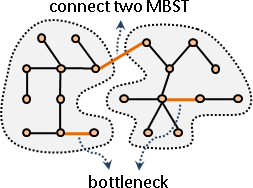

Bottleneck
一張圖上、一棵生成樹上、一條路徑上，權重最小的邊，稱作「瓶頸」。
然而，為了前後文連貫，此處將定義暫時更改為權重最大的邊。古早人也是如此定義。
Minimum Bottleneck Spanning Tree
一張圖的所有生成樹當中，權重最大的邊（瓶頸），其權重最小的生成樹，稱作「最小瓶頸生成樹」，可能有許多棵。
以下只討論無向圖。一個簡單的方式，是以最小生成樹MST，作為最小瓶頸生成樹MBST。
Kruskal's Algorithm造就MST的最後一條邊，就是瓶頸。
證明
既然膽敢宣稱MST是MBST，那麼也許MST與MBST當中有些相近的性質。有時不妨率由舊章，以現有的MST性質，推定未知的MBST性質。大膽假設、小心求證。
MST有著一個關鍵性質：以權重最小的邊，連接兩棵MST，可以構成一棵MST。依樣畫葫蘆，MBST或許也有著一個關鍵性質：以權重最小的邊，連接兩棵MBST，可以構成一棵MBST。

此處用中文囉哩囉嗦證明之。若用數學式子，也許只消兩行：
甲、連接的邊，權重大於等於原本兩棵MBST的瓶頸權重，則會成為新樹的瓶頸。由於選擇了權重最小的邊當作連接的邊，連接的邊又是新樹的瓶頸，新樹的瓶頸權重當然也最小──新樹是一棵MBST。
乙、連接的邊，權重小於原本兩棵MBST的瓶頸權重，則不會成為新樹的瓶頸。新樹的瓶頸由原本兩棵MBST的瓶頸二選一，選權重大的那個成為新樹的瓶頸。因為原本兩棵MBST的瓶頸權重已經最小了，新樹的瓶頸權重當然也最小──新樹是一棵MBST。
新性質是正確的！由於MST和MDST都可以用權重最小的邊構造而得，因此在每一種MST演算法當中，每個步驟的MST也隨時是MBST。
儘管MST一定是MBST，但是小心MBST不見得是MST。儘管兩棵MBST以權重最小的邊相連，一定是一棵MBST，但是一棵MBST移除權重最大的邊，不見得是兩棵MBST。
演算法
事實上MBST有一個O(V+E)的演算法。
一、二分搜尋法，搜尋圖上所有邊的權重，找出MBST的瓶頸。
二分時，採用O(N)的中位數演算法。
二、每枚舉一個瓶頸，權重小於等於瓶頸的邊，皆可作為生成樹。
甲、掃描一次，找出權重小於等於瓶頸的邊。
乙、Graph Traversal，判斷圖上各點是否連通。
若連通，則此瓶頸定可形成生成樹。反之則無法形成生成樹。
丙、連通的點，合併為一點。以後就不需要重新遍歷了。
三、若要構造生成樹，在乙步驟，去掉形成環的邊（back edge）即可。
MST與MBST相異之處就在於：
MBST可以去掉環上任意一條邊，MST必須去掉環上權重最大的邊。
Minimum Bottleneck Path
一張無向圖上，兩點之間的所有路徑當中，瓶頸權重最小的一條路徑，稱作「最小瓶頸路徑」，可能有許多條。
最小生成樹上的所有路徑，都是原圖的最小瓶頸路徑。證明方式同前，只是把生成樹改成了路徑。
如果需要所有兩點之間的最小瓶頸路徑的其中一個瓶頸，則可以使用DP：從邊數為一的最小瓶頸路徑開始，逐步推導出更長的最小瓶頸路徑。O(V^2)時間建表、O(1)時間查詢。
亦可利用「Lowest Common Ancestor」。O(VlogV)時間建表、O(logV)時間查詢。
有向圖的情況，就請讀者自行研究了。最簡單的作法是修改最短路徑演算法。
UVa 11354 12176 12655
Second-best Minimum Spanning Tree
一張無向圖，權重最接近最小生成樹的另一棵生成樹，稱作「次小生成樹」。可能與最小生成樹權重相等。可能有許多棵。
找到一棵次小生成樹，演算法共兩種。
一、求出一棵最小生成樹。（建議使用Kruskal's Algorithm）
二、窮舉每一條最小生成樹上的邊pq：
甲、從圖上刪除此邊，重新求出一棵最小生成樹。（邊不必重新排序）
乙、記下此樹。
三、剛剛得到的V-1棵樹，權重最小者便是次小生成樹。
窮舉不要的邊，刪除後再重找。時間複雜度O(VE*α(E,V))。
一、求出一棵最小生成樹。
二、求出樹上所有兩點ij之間，權重最大的邊（瓶頸）。記為E(i,j)。
（所有兩點間最小瓶頸路徑。）
三、窮舉每一條不在最小生成樹上的邊pq：
甲、把邊pq添加到最小生成樹上，勢必形成環。
乙、然後拆除邊E(p,q)，勢必又形成樹，此樹權重已然盡量少。
丙、記下此樹。
四、剛剛得到的E-(V-1)棵樹，權重最小者便是次小生成樹。
窮舉想要的邊，添加後再修正。步驟一與二各有數種演算法，時間複雜度也跟著改變。時間複雜度可達到O(ElogV)。
UVa 10600 10462 ICPC 5713